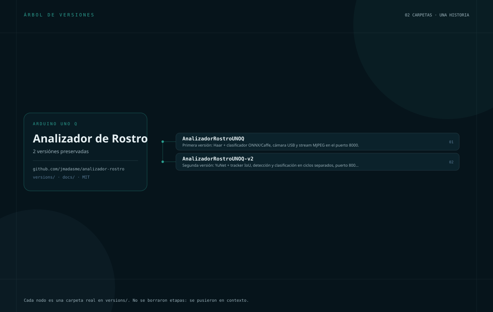
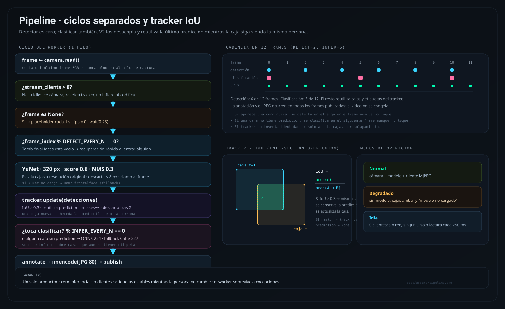

AnalizadorRostroUNOQ
46 archivosPrimera versión: Haar + clasificador ONNX/Caffe, cámara USB y stream MJPEG en el puerto 8000.
Ver carpetaDetección y reconocimiento en dos etapas sobre la UNO Q, con Haar, YuNet, ONNX y un tracker que evita parpadeos.

Dos versiones de un pipeline de visión para la Arduino UNO Q: captura USB, detección de rostros, clasificación y stream MJPEG. La segunda separa detección y clasificación con un tracker IoU para no repetir trabajo en cada frame.
Un detector por frame consume CPU y hace parpadear las etiquetas: el rostro se detecta, se pierde y vuelve a aparecer aunque la persona no se haya movido.
Separar detección y clasificación, mantener identidad con un tracker IoU y publicar el resultado por MJPEG desde la propia UNO Q.
Cada carpeta conserva una etapa del proyecto. No se borraron las anteriores: se pusieron en contexto.
Primera versión: Haar + clasificador ONNX/Caffe, cámara USB y stream MJPEG en el puerto 8000.
Ver carpetaSegunda versión: YuNet + tracker IoU, detección y clasificación en ciclos separados, puerto 8001 y benchmark propio.
Ver carpetaEnviar video a un servicio externo plantea privacidad, costo y latencia. Esta aplicación lleva detección y clasificación al QRB2210 y sirve el resultado como MJPEG dentro de la LAN.
Los servicios de visión artificial reciben cada frame, cobran por uso y dependen de internet. Para un local, un evento o un prototipo, eso es caro y difícil de explicar a quien aparece en cámara.
YuNet + tracker IoU + clasificador ONNX en la placa. El video se queda en la LAN y se sirve como stream MJPEG a cualquier navegador, sin instalar nada en el cliente.
Detección y clasificación separadas para gastar CPU solo cuando hace falta.
Logitech Brio USB o IP Webcam MJPEG por WiFi, con resolución reducida para el pipeline.
YuNet a 320 px cada N frames, con fallback Haar si falta el modelo.
Conserva la última predicción y evita el parpadeo de etiquetas entre frames.
ONNX UTKFace o Caffe Levi & Hassner, en ciclos separados de la detección.
Cajas, etiquetas y HUD sobre MJPEG para cualquier navegador de la red.
Detectar es caro; clasificar también. Separar los ciclos y reutilizar tracks es lo que permite mantener la UI fluida en CPU.

Detección frontal rápida y liviana, con Haar como red de seguridad.
Un track desaparecido se conserva hasta dos frames para no perder la etiqueta.
Sin clientes MJPEG no hay inferencia ni JPEG: la CPU queda casi libre.
Un proyecto completo: dataset, entrenamiento, runtime, UI y despliegue.
Detección frontal con score 0.6 y NMS 0.3, y fallback clásico si falta el modelo.
Empareja detecciones con tracks y conserva predicciones para estabilizar la UI.
ONNX propio entrenado con UTKFace o Caffe de Levi & Hassner; `auto` prefiere el ONNX.
Pipeline UTKFace con métricas de test: género 84,56 %, edad exacta 48,17 %, ±1 bucket 83,8 %.
Stream para varios navegadores y snapshots, sin plugins ni dependencias en el cliente.
Sin envío de frames a Internet; advertencias explícitas sobre datos biométricos y consentimiento.
OpenCV, ONNX Runtime y FastAPI sobre el Linux de la UNO Q; PyTorch solo para entrenar.
El runtime es deliberadamente liviano: OpenCV para captura y YuNet, ONNX Runtime para clasificar y FastAPI para servir la UI y el stream.
Python FastAPI OpenCV YuNet ONNX Runtime PyTorch UTKFace Caffe MJPEG Debian QRB2210 IP Webcam
arrancar el analizador
$ git clone https://github.com/wanderc137/AnalizadorRostroUNOQ-v2 $ cd AnalizadorRostroUNOQ-v2 $ pip install -r requirements.txt $ ./scripts/download_model.sh $ ./scripts/run.sh # UI → http://<IP_UNO_Q>:8001/
Cada decisión, cada límite y cada comando están documentados en el repositorio. Sin folletos: lo que funciona se muestra, lo que no, también.
Usá esta familia como base para analizador de rostro. Está documentada para que puedas entenderla, ejecutarla y continuarla sin adivinar.